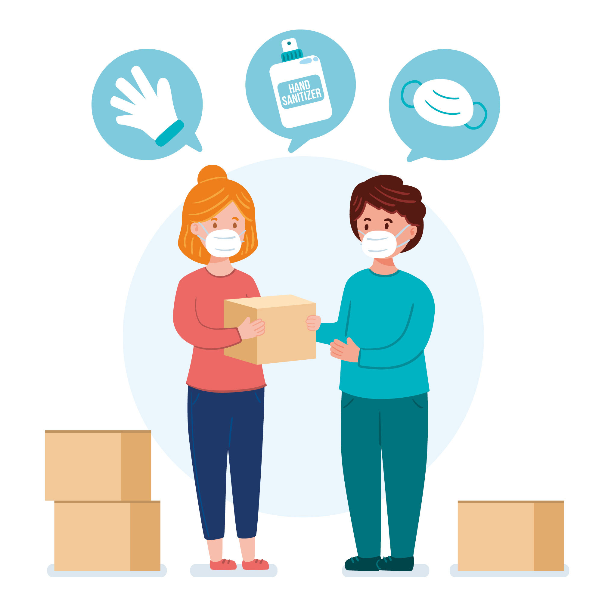

konten edukasi
Membuat konten edukasi melalui sosial media secara kontinu dalam rangka mencegah dan menghadapi penyebaran virus COVID-19.

Open Donasi
Mengadakan gerakan partisipasi melalui Open Donation berupa APD (Alat Pelindung Diri), Masker, dan Hand Sanitizer. Selain itu, juga dapat berupa uang nontunai dan barang kebutuhan bahan pokok (makanan/minuman) yang dapat disalurkan langsung kepada masyarakat yang membutuhkan bantuan selama pembatasan aktivitas masyarakat di luar rumah.

relawan
Apabila ada program pemerintah yang dapat dibutuhkan dan sesuai dengan kemampuan teman- teman, maka akan kita diskusikan lebih lanjut nantinya.